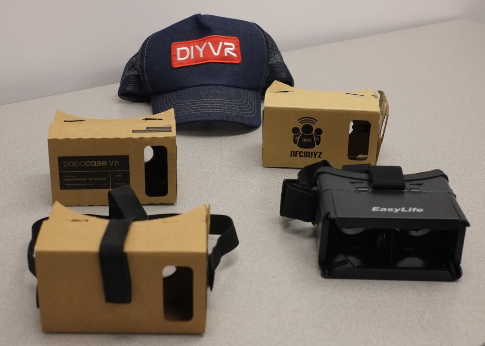
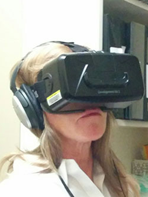
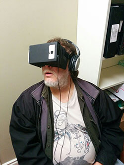
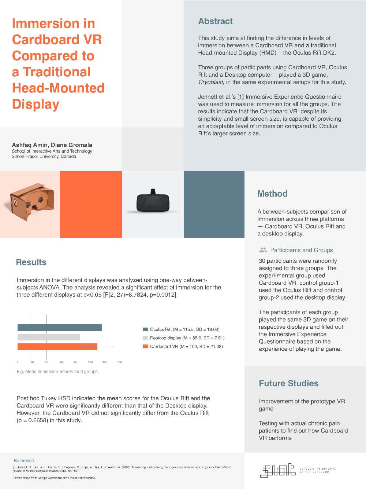

User Experience, Virtual Reality, Healthcare, Chronic Pain, Usability, Mixed Reality
Research shows, VR is a useful medium for pain distraction, especially in acute pain. Our studies in Pain Studies Lab, SFU found VR's effectiveness in Chronic Pain management. These previous studies used traditional high-tech VR systems. I am researching the effectiveness of the low-cost Cardboard VR in pain distraction. I am using Cardboard and Oculus Rift for my studies.



This repeated-measure study in a clinical setting examined how effective is Cardboard VR with actual pain patients for playing a VR game, compared to an Oculus Rift. 30 participating patients volunteered to play InMind on the Rift and the Cardboard. I measured Present Pain Intensity (PPI) and Retroactive Pain Intensity (RPI–pain in the last 10 minutes). The results showed, for RPI the effect of the Rift is profound, and the difference in two HMDs is significant. Immersion and Single-measure pain distraction were also significant. However, Cardboard was capable of providing significant pain distraction compared to the Pre-VR (no VR) condition.
Project DetailsThe study aimed at finding the difference in levels of immersion between a Cardboard VR and a traditional Head-mounted Display–the Oculus Rift DK2. Three groups of participants played Cryoblast, a VR pain management game, on Cardboard, Oculus Rift and Desktop (control). Jennett et al.’s Immersive Experience Questionnaire was used to measure immersion. The results showed, the Cardboard VR, despite its simplicity and small screen size, is capable of providing an acceptable level of immersion compared to Oculus Rift’s larger screen size. However, examining the underlying factors of immersion (e.g., control, real-world dissociation, etc.) showed differences for these two VR viewers.
Project Details